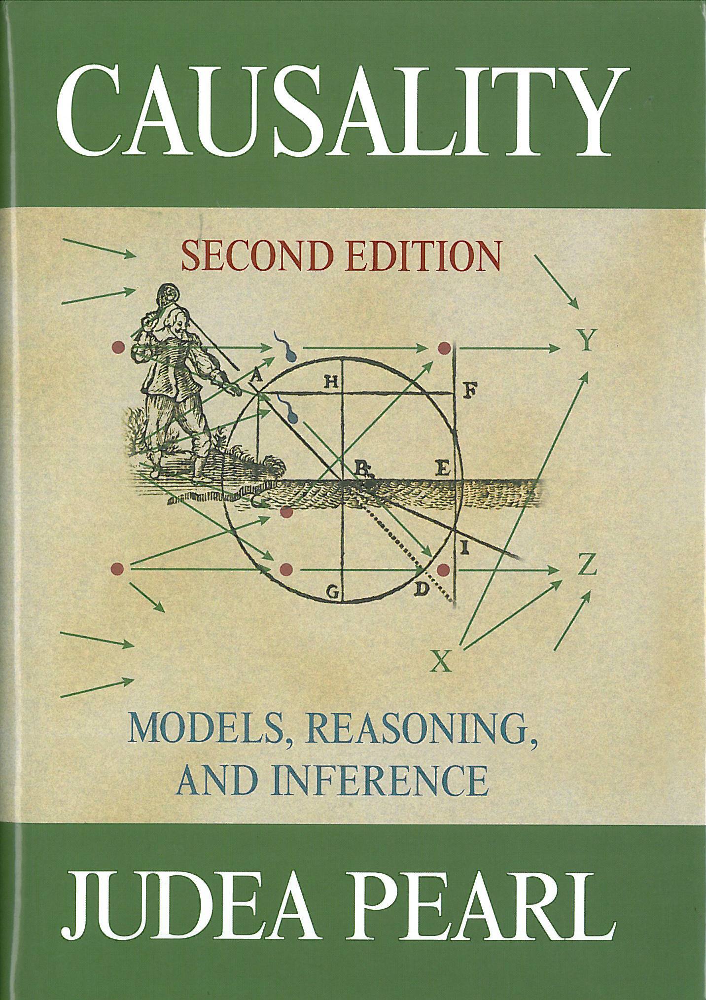

📖《因果推断》是图灵奖得主Judea Pearl的代表作，被誉为因果推断领域的"圣经"。书中系统讲解了因果图、do-calculus等核心概念，为从相关性到因果性的飞跃提供了数学基础。
因果推断的圣经，人工智能世界模型的目标以及基础。
Pearl 的因果推断理论是人工智能领域被低估但至关重要的贡献。传统的统计学和相关分析只能告诉我们"A和B相关"，但无法回答"A是否导致B"。Pearl 用因果图和 do-calculus 为这个问题提供了严格的数学框架。
这本书对于理解人工智能的未来至关重要。当前的深度学习本质上是相关性学习，无法理解因果关系。要让人工智能真正理解世界、具备推理能力，因果推断是必经之路。Pearl 本人多次批评当前AI领域对因果性的忽视。读这本书，不仅能学到一套强大的分析工具，更能看清AI发展的下一波浪潮。因果推断，是AI从"模式识别"走向"世界理解"的关键。